Sobetsu
Sobetsu · Hokkaido
Sobetsu
Highlighted on the Hokkaido map.
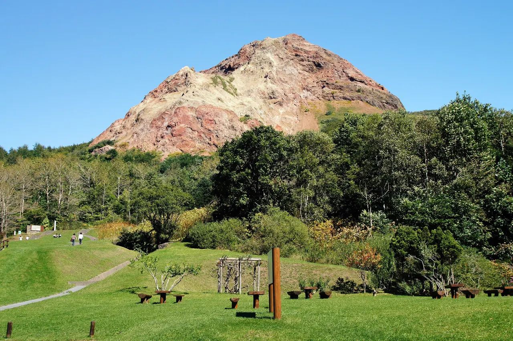
Stay
rento
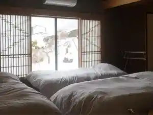
Rento
洞爺湖 鶴雅リゾート 洸の謌
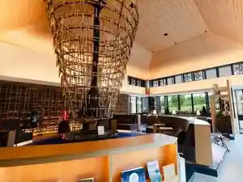
Touyako Tsuruga Rizooto Kou No Uta
温泉旅館いこい荘
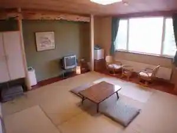
Onsenryokan Ikoi Sou
ATTA Toya - Lake Resort
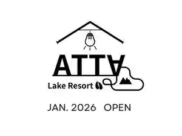
Atta Toya - Lake Resort
洞爺湖別邸 進木庵
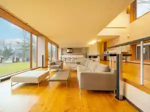
Touyako Bettei Shingi Iori
ペンションおおの
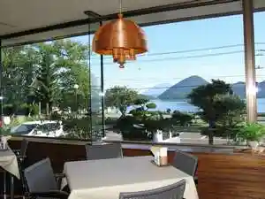
Penshon Oono
ザ・レイクスイート湖の栖（グランベルホテルズ＆リゾーツ）
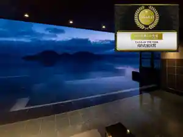
Za Reikusuiito Mizuumi No Sei ( Guranberuhoteruzu & Rizootsu )
洞爺サンパレス リゾート＆スパ(グランベルホテルズ＆リゾーツ)
Touya Sanparesu Rizooto & Supa ( Guranberuhoteruzu & Rizootsu )
Dining
ザ・レイクスイート 湖の栖
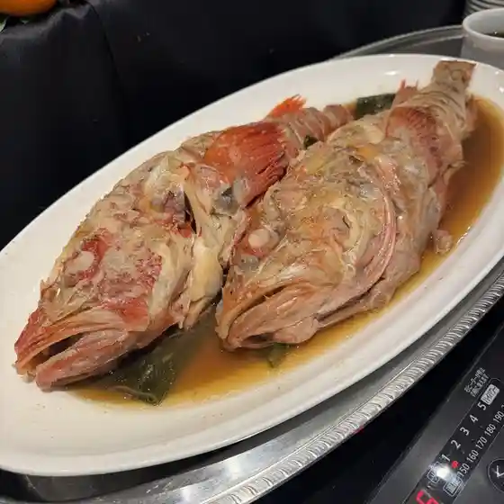
Za Reikusuiito Mizuumi No Sei
味処旅と人
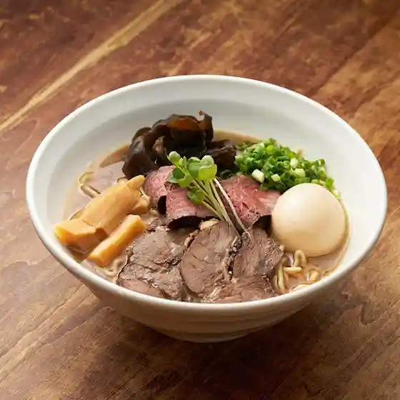
Ajidokoro Tabi To Nin
レストハウス梓
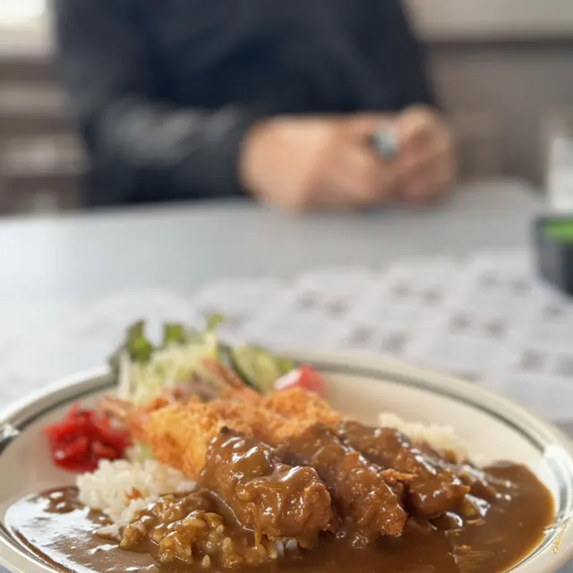
Resutohausu Azusa
道の駅そうべつ情報館i
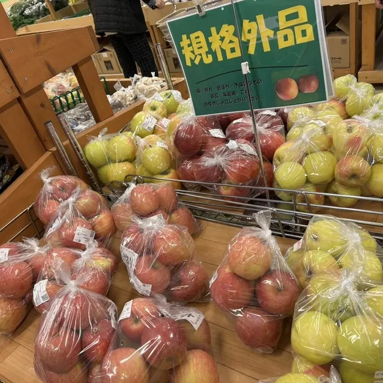
Michi No Eki Soubetsu Jouhoukan I
民芸御殿
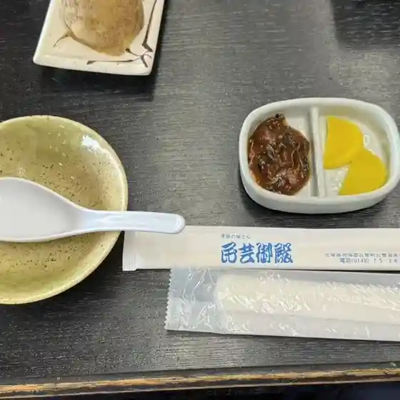
Mingei Goten
らーめん 華
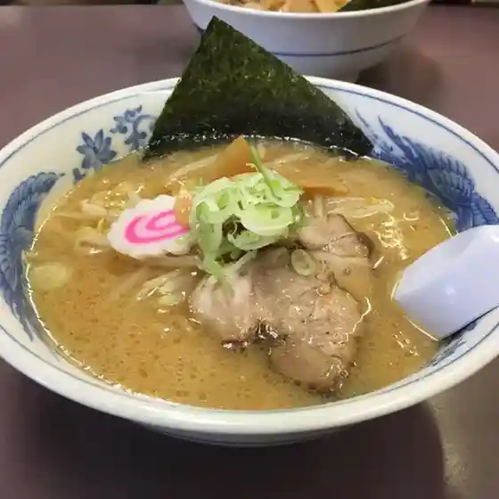
Raamen Hana
湯人家
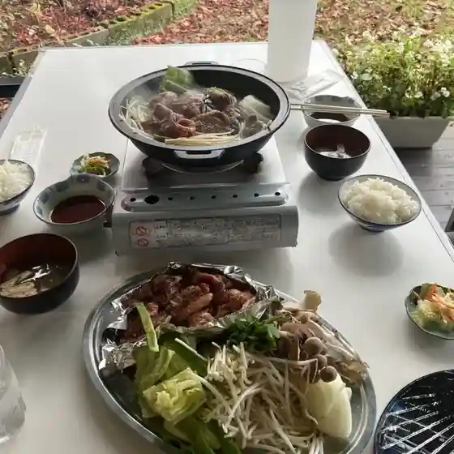
Yu Jinka
洞魂らーめん
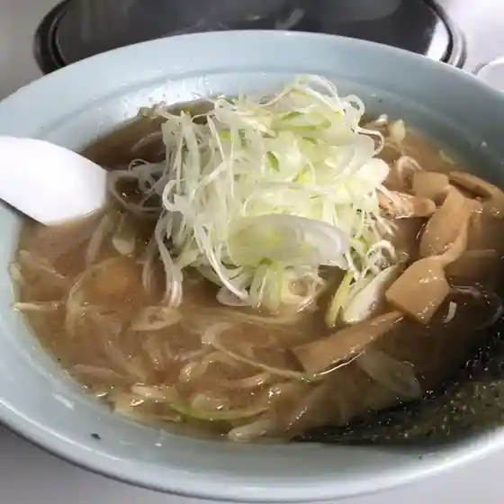
Hora Tamashii Raamen
とまと屋さん
Tomato Ya San
そうべつ情報館ｉ 農産物直売所
Soubetsu Jouhoukan I Nousanbutsu Chokubai Tokoro
セイコーマート ふじさわ店
Seikoomaato Fujisawa Mise
駄菓子屋 ゆみちゃん
Dagashiya Yumichan
Sopela
Sopela
来夢人の家
Raimu Nin No Ie
釜めし吉田屋
Kama Meshi Yoshidaya
湖と森のCafe
Mizuumi To Mori No Cafe
鮨食堂 壮竜
Sushi Shokudou Sou Ryuu
くだもの農園 浜田園
Kudamono Nouen Hamada Sono
たまごcafe at たつかーむ
Tamago Cafe At Tatsukaamu
ほりぐち果樹園
Horiguchi Kajuen
ザ バー
Za Baa
いわくら屋
Iwakura Ya
だるまや土産店
Darumaya Miyage Mise
ペンションおおの
Penshon Oono